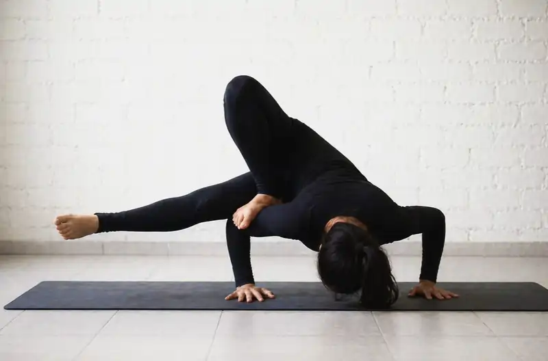

<script type="application/ld+json">
{
  "@context": "https://schema.org",
  "@graph": [
    {
      "@type": "Organization",
      "@id": "https://onlineyogaclass.in/#organization",
      "name": "Shringarika Mishra - Clinical Yoga",
      "url": "https://onlineyogaclass.in",
      "logo": "https://onlineyogaclass.in/images/logo.webp"
    },
    {
      "@type": "Person",
      "@id": "https://onlineyogaclass.in/#shringarika",
      "name": "Shringarika Mishra",
      "jobTitle": "Clinical Yoga Specialist & Research Scholar",
      "image": "https://onlineyogaclass.in/images/shringarika.webp",
      "sameAs": [
        "https://scholar.google.com/citations?user=FAp2CnkAAAAJ",
        "https://www.researchgate.net/profile/Shringarika-Mishra",
        "https://in.linkedin.com/in/shringarika-mishra-400607224"
      ]
    },
    {
      "@type": "BlogPosting",
      "@id": "https://onlineyogaclass.in/blogs/navigating-pregnancy-with-confidence-a-clinical-guide-to-prenatal-wellness.html#article",
      "isPartOf": {
        "@id": "https://onlineyogaclass.in/blogs/navigating-pregnancy-with-confidence-a-clinical-guide-to-prenatal-wellness.html"
      },
      "headline": "Navigating Pregnancy with Confidence: A Clinical Guide to Prenatal Wellness and Gentle Yoga",
      "description": "Are you feeling overwhelmed by the physical and emotional changes of pregnancy? Learn how your body transforms across every trimester in clear, simple terms. Discover our research-backed, gentle yoga protocols designed to relieve pain, lower stress, and prepare you for a smooth delivery.",
      "image: "https://onlineyogaclass.in/images/stress.webp",
      "author": {
        "@id": "https://onlineyogaclass.in/#shringarika"
      },
      "publisher": {
        "@id": "https://onlineyogaclass.in/#organization"
      },
      "mainEntityOfPage": "https://onlineyogaclass.in/blogs/navigating-pregnancy-with-confidence-a-clinical-guide-to-prenatal-wellness.html"
    },
    {
      "@type": "BreadcrumbList",
      "@id": "https://onlineyogaclass.in/blogs/navigating-pregnancy-with-confidence-a-clinical-guide-to-prenatal-wellness.html#breadcrumb",
      "itemListElement": [
        {
          "@type": "ListItem",
          "position": 1,
          "name": "Home",
          "item": "https://onlineyogaclass.in/"
        },
        {
          "@type": "ListItem",
          "position": 2,
          "name": "Clinical Blogs",
          "item": "https://onlineyogaclass.in/blogs.html"
        },
        {
          "@type": "ListItem",
          "position": 3,
          "name": "Clinical Guide to Prenatal Wellness",
          "item": "https://onlineyogaclass.in/blogs/navigating-pregnancy-with-confidence-a-clinical-guide-to-prenatal-wellness.html"
        }
      ]
    }
  ]
}
</script>

<main class="relative z-10 max-w-5xl mx-auto px-4 sm:px-6 lg:px-8 pt-32 pb-24">
    <div class="mb-10 max-w-3xl mx-auto rounded-[2.5rem] overflow-hidden bg-slate-50 border border-pink-50 shadow-md">
        
    </div>

    <div class="article-card bg-white border border-gray-100 rounded-[2.5rem] p-8 md:p-12 shadow-sm transition">
        <script type="application/ld+json">
    {
      "@context": "https://schema.org",
      "@type": "BlogPosting",
      "headline": "Navigating Pregnancy with Confidence: A Clinical Guide to Prenatal Wellness and Gentle Yoga",
      "description": "Learn about the changes during pregnancy in plain, simple terms. Discover how modern lifestyle stress affects maternal health, and follow our step-by-step clinical yoga postures to ensure a safe, comfortable, and confident prenatal journey.",
      "keywords": "Clinical Yoga Varanasi, BHU Yoga Specialist, prenatal wellness protocols, gentle pregnancy yoga poses, trimester physical adaptations, maternal nerve stabilization, breathing during labor, Shringarika Mishra research",
      "author": {
        "@type": "Person",
        "name": "Shringarika Mishra"
      },
      "publisher": {
        "@type": "Organization",
        "name": "onlineyogaclass.in",
        "logo": {
          "@type": "ImageObject",
          "url": "https://onlineyogaclass.in/images/logo.webp"
        }
      }
    }
    </script>

    <span class="text-pink-600 font-bold text-xs uppercase tracking-widest">Maternal Physiology &amp; Somatic Support Protocols</span>
    
    <h2 class="text-3xl md:text-4xl font-bold mt-6 mb-6 text-transparent bg-clip-text bg-gradient-to-r from-pink-600 via-purple-600 to-pink-700">Navigating Pregnancy with Confidence: A Clinical Guide to Prenatal Wellness and Gentle Yoga</h2>
    
    <div class="flex flex-col md:flex-row gap-8 mb-8">
        <div class="md:w-1/3">
            
        </div>
        <div class="md:w-2/3">
            <p class="text-gray-600 text-lg leading-relaxed">
                Pregnancy is one of the most beautiful and profound transformations a woman's body can ever experience. However, with all the exciting moments, it is very common for expectant mothers to feel confused or overwhelmed by the rapid changes happening inside them. Modern fast-paced lifestyles, combined with endless pieces of conflicting advice from the internet, often add a lot of unnecessary physical anxiety and mental tension to what should be a peaceful journey.
            </p>
            <p class="text-gray-600 text-lg leading-relaxed mt-4">
                During my extensive clinical work and ongoing research at Banaras Hindu University (BHU), I have spent years analyzing how the human body adapts to complex hormonal changes. One core truth I always share with my students is that pregnancy is not a medical illness to be feared; it is a natural, highly intelligent design. When you feel lower back aches, sudden fatigue, or emotional mood swings, your internal systems are trying to adjust to support a growing life. To make this journey truly comfortable, we must stop forcing the body into high-stress routines and instead learn to work with its changing physics. This comprehensive clinical guide will break down your body’s unique changes in very simple terms, explain how modern stress impacts your health, and provide a clear, step-by-step gentle yoga protocol to help you stay strong, balanced, and confident.
            </p>
        </div>
    </div>
    
    <div class="full-content text-gray-700 space-y-8 leading-relaxed border-t border-gray-50 pt-8">
        
        <section>
            <h3 class="text-2xl font-bold text-gray-900 mb-3">Understanding Your Changing Body: Trimester by Trimester</h3>
            <p>
                To move through your pregnancy with total confidence, it helps to understand what is happening inside your muscular and skeletal systems. Your body creates specialized chemical signals that allow your joints and tissues to shift to accommodate your baby.
            </p>
            <table class="w-full border-collapse my-6 text-sm text-left shadow-sm rounded-xl overflow-hidden border border-gray-100">
                <thead>
                    <tr class="bg-pink-600 text-white font-bold">
                        <th class="p-4">Trimester Phase</th>
                        <th class="p-4">What is Happening Inside Your Body</th>
                        <th class="p-4">The Main Focus for Your Movement</th>
                    </tr>
                </thead>
                <tbody class="divide-y divide-gray-100 bg-white">
                    <tr>
                        <td class="p-4 font-bold text-gray-900">First Trimester (Weeks 1-12)</td>
                        <td class="p-4 text-gray-600">Hormones like progesterone rise rapidly. This can lead to heavy morning sickness, sudden exhaustion, and deep changes in mood.</td>
                        <td class="p-4 text-gray-600">Gentle breathing exercises and calming resting poses to steady your nervous system and reduce fatigue.</td>
                    </tr>
                    <tr>
                        <td class="p-4 font-bold text-gray-900">Second Trimester (Weeks 13-26)</td>
                        <td class="p-4 text-gray-600">The baby grows larger, shifting your physical center of gravity forward. Your spine begins to arch more, which can compress lower back muscles.</td>
                        <td class="p-4 text-gray-600">Gentle side-stretches and mild pelvic stabilization to maintain space in your torso and prevent lower back strain.</td>
                    </tr>
                    <tr class="bg-pink-50/50">
                        <td class="p-4 font-bold text-pink-700">Third Trimester (Weeks 27-40+)</td>
                        <td class="p-4 text-pink-900 font-medium">A hormone called relaxin softens your pelvic ligaments to prepare for birth, which can sometimes make the pelvic joints feel unstable or sore.</td>
                        <td class="p-4 text-pink-900">Supported floor poses, deep relaxation, and hip-opening movements that focus entirely on stability rather than deep flexibility.</td>
                    </tr>
                </tbody>
            </table>
            <p>
                As your belly expands, your body automatically produces a hormone named <strong>relaxin</strong>. The main job of relaxin is to loosen up your tight ligaments so your hips can widen naturally when it is time to deliver. While this hormone is absolutely essential, it can temporarily make your pelvic joints feel loose, unstable, or easily strained. This is why standard stretching routines can sometimes cause more harm than good during pregnancy. Our specialized approach focuses strictly on stability, alignment, and gentle decompression, ensuring that your muscles are strong enough to support your joints as your weight increases.
            </p>
        </section>

        <section>
            <h3 class="text-2xl font-bold text-gray-900 mb-3">The Symptoms of Physical and Mental Strain</h3>
            <p>
                When an expectant mother is under daily stress—whether from a busy job, housework, or anxiety about childbirth—the body reacts by tightening up. These physical warnings are clear indicators that your body needs to rest:
            </p>
            <ul class="space-y-4 text-gray-700 mt-4 list-none pl-0">
                <li class="flex items-start gap-3">
                    <span class="flex-shrink-0 w-6 h-6 bg-pink-100 text-pink-600 rounded-full flex items-center justify-center font-bold text-xs mt-1">1</span>
                    <div>
                        <strong>Lower Back and Pelvic Aches:</strong> Dull, pulling pains in your lower back or around your pubic bone, which usually get worse after sitting or standing for a long time without support.
                    </div>
                </li>
                <li class="flex items-start gap-3">
                    <span class="flex-shrink-0 w-6 h-6 bg-pink-100 text-pink-600 rounded-full flex items-center justify-center font-bold text-xs mt-1">2</span>
                    <div>
                        <strong>Shortness of Breath and Indigestion:</strong> As your growing uterus pushes upward against your diaphragm and stomach, it can become harder to take full breaths, often leading to acid reflux, heartburn, and shallow breathing patterns.
                    </div>
                </li>
                <li class="flex items-start gap-3">
                    <span class="flex-shrink-0 w-6 h-6 bg-pink-100 text-pink-600 rounded-full flex items-center justify-center font-bold text-xs mt-1">3</span>
                    <div>
                        <strong>Fluid Accumulation and Swelling:</strong> Feeling a heavy tightness, numbness, or visible swelling in your ankles, feet, and fingers, especially toward the end of a long day.
                    </div>
                </li>
            </ul>
        </section>

        <section class="bg-pink-50 p-8 rounded-3xl border-l-8 border-pink-400">
            <h3 class="text-xl font-bold text-pink-800 mb-4">The Science of Maternal-Fetal Bonding</h3>
            <p class="text-sm italic mb-4">
                Did you know that your baby’s developing nervous system is intimately linked to your own daily emotions? When you experience prolonged stress, your body releases a hormone called cortisol into your bloodstream. If your cortisol stays high, it can put your body into a protective survival state, narrowing your blood vessels and making you feel continuously exhausted. However, when you intentionally slow down your breathing and relax your muscles, your brain produces calming chemicals like endorphins. This soothing shift instantly lowers your heart rate, increases the flow of oxygen-rich blood through the placenta, and creates a tranquil environment that directly helps your baby grow and thrive.
            </p>
        </section>

        <section>
            <h3 class="text-2xl font-bold text-gray-900 mb-3">The Long-Term Benefits of Specialized Prenatal Movement</h3>
            <p>
                Taking regular care of your physical alignment during pregnancy does much more than just relieve temporary pains. Investing a few gentle minutes into your body every single day creates a strong foundation for your long-term health and your delivery day:
            </p>
            <ul class="space-y-4 text-gray-700 mt-4 list-none pl-0">
                <li class="flex items-start gap-3">
                    <span class="flex-shrink-0 w-6 h-6 bg-pink-100 text-pink-600 rounded-full flex items-center justify-center font-bold text-xs mt-1">1</span>
                    <div>
                        <strong>Smoother Labor Preparation:</strong> Gentle, structured hip-opening movements help keep your pelvic floor soft, flexible, and responsive, which allows your baby to move into an optimal position for a smoother delivery.
                    </div>
                </li>
                <li class="flex items-start gap-3">
                    <span class="flex-shrink-0 w-6 h-6 bg-pink-100 text-pink-600 rounded-full flex items-center justify-center font-bold text-xs mt-1">2</span>
                    <div>
                        <strong>Blood Pressure Regulation:</strong> Mindful, slow breathwork helps keep your circulatory system calm, significantly reducing your risk of developing stress-induced conditions like gestational hypertension.
                    </div>
                </li>
                <li class="flex items-start gap-3">
                    <span class="flex-shrink-0 w-6 h-6 bg-pink-100 text-pink-600 rounded-full flex items-center justify-center font-bold text-xs mt-1">3</span>
                    <div>
                        <strong>Accelerated Postnatal Recovery:</strong> Keeping your deep core and breathing muscles active prevents severe tissue separation, making it much easier for your body to heal and regain its natural stamina after your baby is born.
                    </div>
                </li>
            </ul>
        </section>

        <section>
            <h3 class="text-2xl font-bold text-gray-900 mb-3">Why Soft Somatic Movement Protects Your Body Better</h3>
            <p>
                During pregnancy, pushing yourself through traditional high-impact workouts, heavy weightlifting, or rapid, sweaty exercise routines can place a massive strain on your joints. Your body views extreme physical exhaustion as an internal emergency, which can tighten your pelvic muscles and leave you feeling completely drained.
            </p>
            <div class="my-6 text-center">
                
            </div>
            <p>
                Clinical prenatal yoga focuses on safety and ease. By using supportive props like pillows, wall spaces, and chairs, we allow your muscles to release tension without any risk of overstretching your delicate joints. This unique method improves micro-circulation to your pelvic organs, balances your blood sugar levels, and leaves you feeling light, centered, and fully energized.
            </p>
        </section>

        <section>
            <h3 class="text-2xl font-bold text-gray-900 mb-3">My Specialized Prenatal Technique: Safe Somatic Decompression</h3>
            <p>
                Through my clinical observations at Sir Sunderlal Hospital (BHU), I developed a highly secure method designed specifically for expecting mothers, which I call Safe Somatic Decompression. This technique avoids complex balances or intense twists, focusing instead on relieving spinal pressure and keeping the pelvis symmetrical.
            </p>
            <p>
                Our gentle method places a strong emphasis on controlled, slow actions that quiet the mind while expanding physical space inside the torso. This allows your digestive system to work efficiently and gives your lungs the freedom to take deep, full breaths, ensuring your body remains a calm, nourishing home for your baby.
            </p>
            
            <h4 class="text-xl font-bold text-gray-900 mt-6 mb-4 text-center">Your Step-by-Step Daily Prenatal Wellness Asanas</h4>
            
            <div class="space-y-6 mt-4">
                <div class="border border-pink-100 p-5 rounded-2xl bg-white shadow-sm">
                    <h4 class="font-bold text-gray-900 mb-2"><i class="fas fa-hand-holding-heart text-pink-400 mr-2"></i>1. Supported Seated Heart-Opening Focus (Sukhasana Variation)</h4>
                    <p class="text-sm mb-2"><strong>Time to Practice:</strong> 5 to 8 minutes every morning to clear your mind and set a peaceful tone for the day.</p>
                    <p class="text-sm mb-2"><strong>Step-by-Step Instructions:</strong> Find a comfortable spot on your floor or bed. Place a thick, firm pillow or a folded blanket down and sit directly on the edge of it. This helps tilt your pelvis forward slightly, keeping your lower spine perfectly straight and safe. Cross your legs gently in front of you. Rest one palm flat on your lower stomach to connect with your baby, and place your other hand softly over the center of your chest. Close your eyes. Take slow, quiet breaths in through your nose, letting your belly expand gently like a balloon, and breathe out smoothly through your mouth with a soft sigh.</p>
                    <p class="text-sm"><strong>How it helps your body:</strong> Sitting with proper support instantly unloads heavy pressure from your lower tailbone. It helps open up compressed chest muscles, improves your morning oxygen intake, and immediately calms any morning nausea or anxiety.</p>
                </div>
                
                <div class="border border-pink-100 p-5 rounded-2xl bg-white shadow-sm">
                    <h4 class="font-bold text-gray-900 mb-2"><i class="fas fa-compress-alt text-pink-400 mr-2"></i>2. Gentle Modified Seated Hamstring Lengthener (Janu Sirsasana Variation)</h4>
                    <p class="text-sm mb-2"><strong>Time to Practice:</strong> 3 to 5 minutes on each side every afternoon to relieve leg tightness.</p>
                    <p class="text-sm mb-2"><strong>Step-by-Step Instructions:</strong> Sit down on a comfortable yoga mat or a soft blanket spread out on the floor. Extend your right leg straight out in front of you, keeping it relaxed. Bend your left knee and bring the sole of your left foot to rest gently against the inside of your right thigh. If your left knee feels high or strained, slide a pillow underneath it for support. Keep your spine tall and proud. Instead of bending deeply over your leg, simply place your hands flat on the floor on either side of your right knee. Look toward your toes and take 5 slow, deep breaths. Softly switch sides and repeat.</p>
                    <p class="text-sm"><strong>Why it works:</strong> This modified position lengthens tight hamstrings and lower back fibers without placing any pressure on your expanding belly. It improves deep blood circulation through the pelvic floor and prevents common sciatic nerve pain.</p>
                </div>
                
                <div class="border border-pink-100 p-5 rounded-2xl bg-white shadow-sm">
                    <h4 class="font-bold text-gray-900 mb-2"><i class="fas fa-balance-scale text-pink-400 mr-2"></i>3. Deep Core Integration Focus (Utthita Hasta Padangusthasana Modification)</h4>
                    <p class="text-sm mb-2"><strong>Time to Practice:</strong> 3 minutes per side every evening to build stability and balance.</p>
                    <p class="text-sm mb-2"><strong>Step-by-Step Instructions:</strong> Place a steady, non-slip chair right next to your yoga mat, or stand alongside an open wall. Stand up straight with your feet hip-width apart. Place your right hand firmly on the wall or the back of the chair for absolute balance. Shift your weight into your left leg. Slowly lift your right knee upward, bending it gently, and open it slightly out to the right side. Do not try to lift it too high—only as far as your hip feels completely comfortable. Hold this pose while breathing evenly for 20 to 30 seconds, keeping your chest lifted. Lower your foot down softly and switch to the other side.</p>
                    <p class="text-sm"><strong>Why it works:</strong> Using a solid support like a wall or chair completely removes the risk of tripping or losing your balance. This gentle movement safely strengthens your outer hip and glute muscles, which helps stabilize your pelvic joints and reduces evening walking discomfort.</p>
                </div>

                <div class="border border-pink-100 p-5 rounded-2xl bg-white shadow-sm">
                    <h4 class="font-bold text-gray-900 mb-2"><i class="fas fa-feather-alt text-pink-400 mr-2"></i>4. Deep Restorative Release Sequence</h4>
                    <p class="text-sm mb-2"><strong>Time to Practice:</strong> 10 to 15 minutes every night right before falling asleep.</p>
                    <p class="text-sm mb-2"><strong>Step-by-Step Instructions:</strong> Prepare a calm space on your mat or bed with several pillows nearby. Lie down gently on your left side—this side is medically proven to optimize blood and nutrient flow to your placenta. Extend your left leg straight down. Bend your right knee comfortably and place it on top of one or two thick pillows right in front of you, so your hip stays aligned and relaxed. Rest your head on a soft pillow and place your arms in a comfortable position. Close your eyes, let go of all muscle effort, and focus entirely on the natural, rhythmic rise and fall of your breath.</p>
                    <p class="text-sm"><strong>Why it works:</strong> Resting on your left side with proper hip support removes gravitational pressure from your main blood vessels. It drains fluid retention from your lower limbs, relaxes tight spinal nerves, and triggers a deep state of peace that ensures sound, restful sleep.</p>
                </div>
            </div>
        </section>

        <section>
            <h3 class="text-2xl font-bold text-gray-900 mb-3">Why Expert Clinical Direction Changes Your Entire Journey</h3>
            <p>
                Managing physical fatigue, back pain, or anxiety during pregnancy is not something you have to quietly suffer through or manage completely alone. Your body is working incredibly hard to create a new life, and these physical changes are its unique way of asking for gentle, specific care.
            </p>
            <div class="my-6 text-center">
                
            </div>
            <p>
                Our specialized prenatal care and maternal wellness programs at <strong>onlineyogaclass.in</strong> are carefully crafted to teach you how to safely support your body through every stage of your pregnancy. By focusing on low-impact somatic methods and calming breathing tools, you can avoid over-exhaustion, unlock tight joints, and step onto your path toward motherhood feeling completely strong, calm, and radiantly healthy.
            </p>
        </section>

        <div class="border-t border-gray-100 pt-8 mt-8">
            <div class="bg-gray-900 text-white p-8 rounded-[2.5rem] shadow-2xl relative overflow-hidden">
                <div class="flex flex-col md:flex-row items-center gap-8 relative z-10">
                    
                    <div>
                        <h4 class="text-2xl font-bold mb-2">About Shringarika Mishra</h4>
                        <p class="text-sm text-gray-300 leading-relaxed">
                            Gold Medalist (University of Patanjali) &amp; NET JRF (AIR 2). Research Scholar at <strong>Banaras Hindu University (BHU)</strong> specializing in Clinical Yoga and Maternal-Endocrine Stability. With over 11 years of experience and 16 published research papers, she provides evidence-based biological healing through <strong>onlineyogaclass.in</strong>.
                        </p>
                        <div class="flex gap-4 mt-4">
                            <a href="https://www.researchgate.net/profile/Shringarika-Mishra" target="_blank" rel="noopener noreferrer" class="text-xs text-blue-400 font-bold hover:underline"><i class="fab fa-researchgate mr-1"></i> ResearchGate</a>
                            <a href="https://scholar.google.com/citations?user=FAp2CnkAAAAJ&amp;hl=en" target="_blank" rel="noopener noreferrer" class="text-xs text-red-400 font-bold hover:underline"><i class="fab fa-google mr-1"></i> Google Scholar</a>
                        </div>
                    </div>
                </div>
                
                <div class="mt-10 flex flex-col md:flex-row justify-center gap-4">
                    <a href="../../programs/" class="bg-pink-600 text-white px-10 py-4 rounded-full font-bold hover:bg-pink-700 transition shadow-lg text-center text-lg">
                        Join Our Prenatal Care Program
                    </a>
                    <a href="https://wa.me/919559827280" target="_blank" rel="noopener noreferrer" class="border-2 border-green-500 text-green-500 px-10 py-4 rounded-full font-bold hover:bg-green-50 transition text-center text-lg">
                        <i class="fab fa-whatsapp mr-2"></i> Free Clinical Consultation
                    </a>
                </div>
            </div>
        </div>

        <p class="text-[10px] text-gray-400 mt-12 text-center leading-relaxed italic border-t border-gray-100 pt-6">
            <strong>Medical Disclaimer:</strong> The clinical observations and lifestyle protocols shared in this article are intended entirely for general educational and health-awareness purposes, drawing on physiological systems analyzed during my clinical research at BHU. This content cannot replace professional medical diagnosis, regular obstetric checkups, or direct medical oversight. If you experience unexpected rapid spotting, sudden extreme swelling, severe headaches, or unusual abdominal cramping, please consult your medical physician immediately.
        </p>
    </div>
        
    <div class="mt-12 pt-8 border-t border-slate-100 text-left">
        <h4 class="text-xl font-black text-slate-900 tracking-tight mb-4 flex items-center gap-2">
            <span class="w-1 h-6 bg-pink-500 rounded-full"></span> Read More Clinical Insights
        </h4>
        <ul class="space-y-3 font-semibold text-pink-600 text-sm md:text-base">
            <li>
                <a href="optimizing-ivf-success-the-science-of-yoga-during-assisted-conception.html" class="hover:text-pink-700 hover:underline transition flex items-center gap-2">
                    <i class="fas fa-book-open text-xs text-pink-400"></i> Optimizing IVF Success: The Science of Yoga During Assisted Conception
                </a>
            </li>
            <li>
                <a href="restoring-vitality-clinical-yoga-for-healthy-aging-and-longevity.html" class="hover:text-pink-700 hover:underline transition flex items-center gap-2">
                    <i class="fas fa-book-open text-xs text-pink-400"></i> Restoring Vitality: Clinical Yoga for Healthy Aging and Longevity
                </a>
            </li>
        </ul>
    </div>
    </div>
</main>